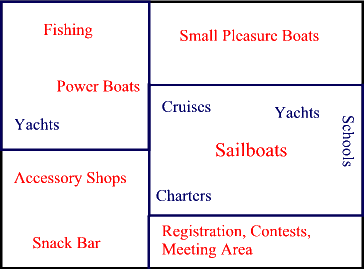

|

|
- Embarcaciones tipo Yate de pesca o motor deben estar en la area NorOeste.
- Snack bar y la tienda de accesorios esta en el lado SurOeste.
- El Area SurEste es el area de Reuniones, Registracion y Concursos.
- Las pequeñas enbarcaciones estaran en el area NorEste.
- Todo otro tipo de embarcacion tiene el area Este central asignada.
|